Handleiding - Ravens
Met Ravens bekijk je eenvoudig waarnemingen van Waarneming.nl en Observation.org. De app toont waarnemingen in tabbladen voor Wij, Straal, Locatie, Soorten en Instellingen.
Knoppen
Bovenaan het scherm vind je knoppen voor lijst/kaart, huidige locatie, favoriete waarnemers, favoriete gebieden en sorteer- of filteropties.
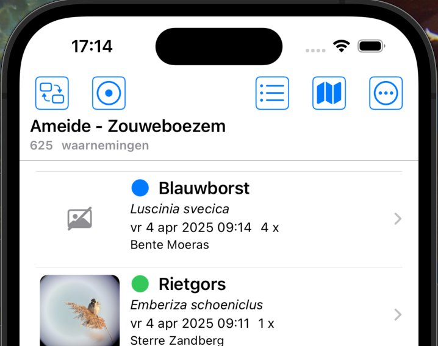
Waarnemingen
Elke waarneming is zichtbaar in een lijst of op de kaart. Tik op een waarneming voor meer informatie.
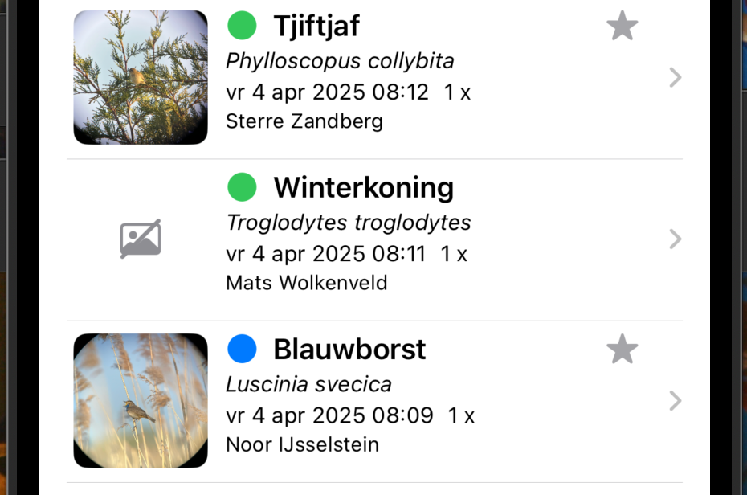
Vegen
Veeg naar rechts voor snelle acties zoals geluiden, waarnemer favoriet maken en soort favoriet maken.
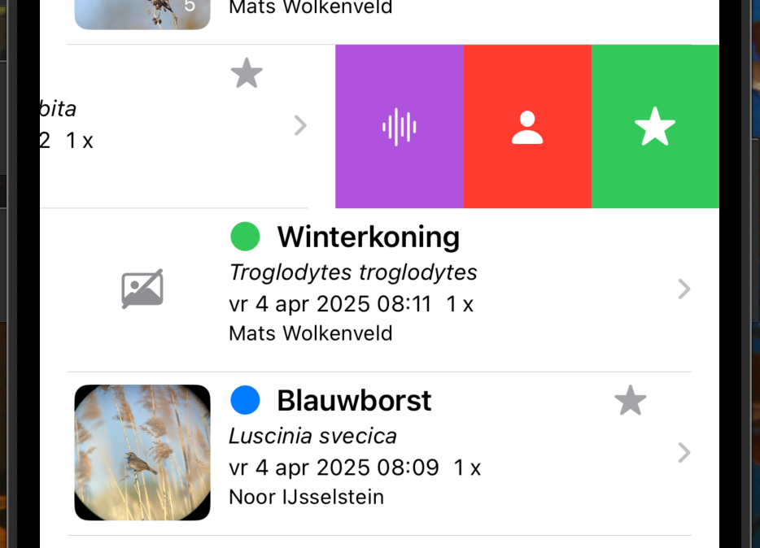
Veeg naar links om te delen, meer informatie te openen of naar Waarneming.nl te gaan.
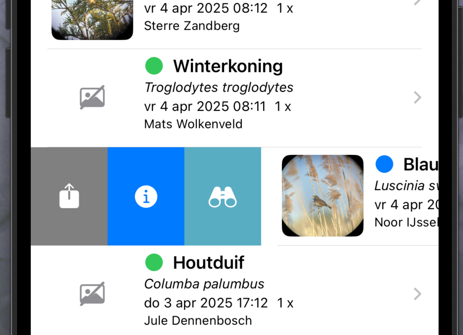
Tabs
Onderaan staan de vaste tabbladen: Wij, Straal, Locatie, Soorten en Instellingen.
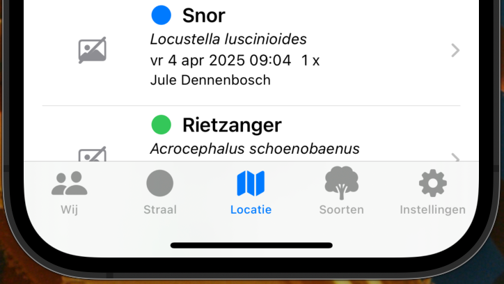
Wij
Hier vind je je eigen waarnemingen en favoriete waarnemers. Je kunt filteren, sorteren en wisselen tussen lijst en kaart.
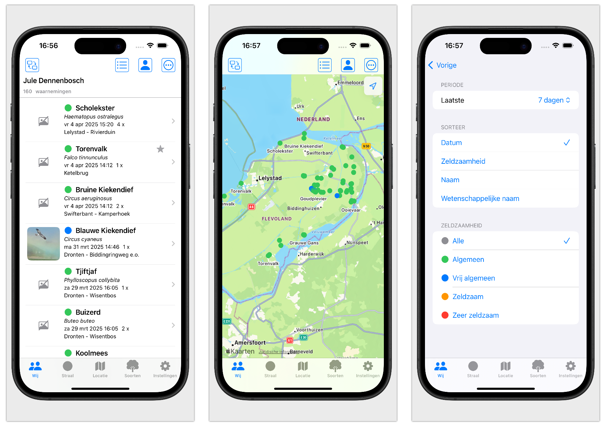
Straal
Bekijk waarnemingen binnen een ingestelde straal. Gebruik je huidige locatie of kies een positie op de kaart.
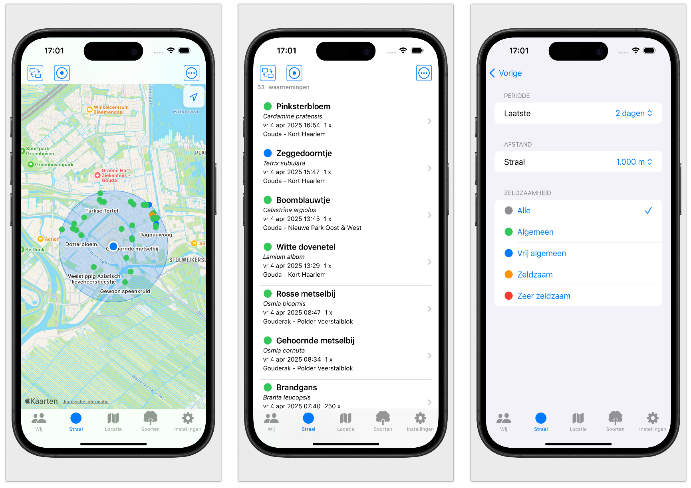
Locatie
Kies favoriete locaties of zoek een locatie om de bijbehorende waarnemingen te zien.
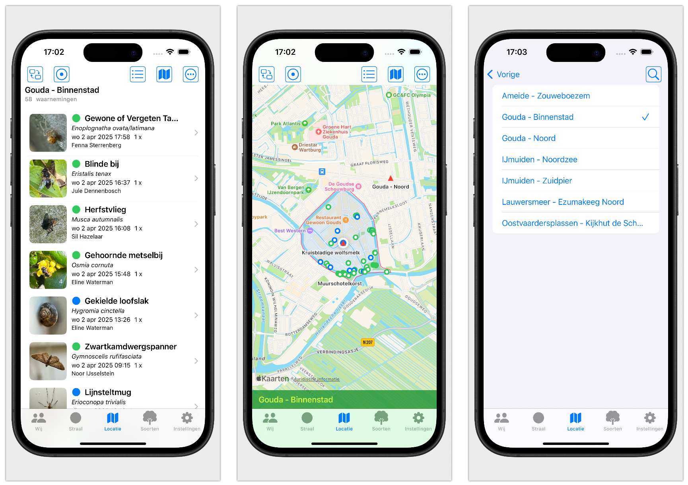
Soorten
Bekijk soorten binnen een geselecteerde soortgroep, zoek op naam en open waarnemingen per soort.
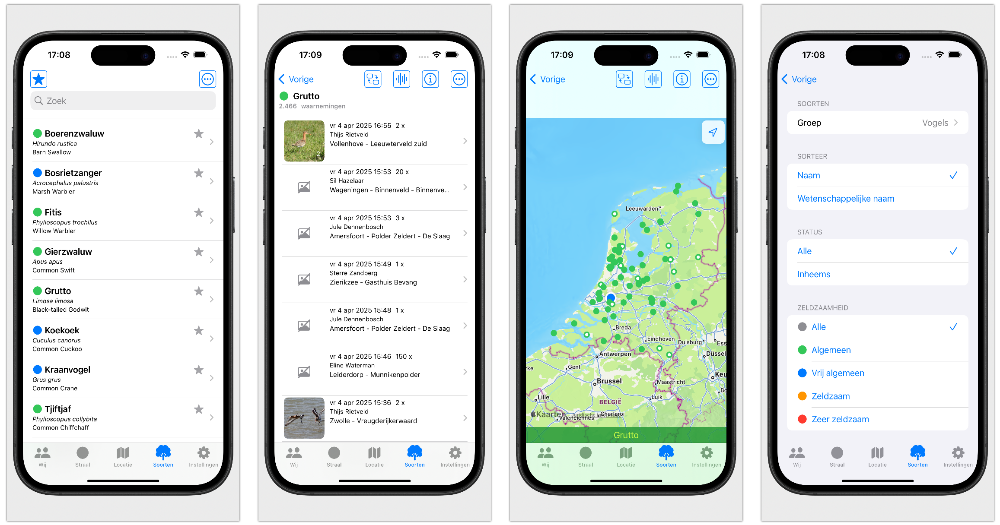
Audio
Bij onder andere vogels, zoogdieren, krekels en sprinkhanen kun je geluidsopnames beluisteren via Xeno-Canto.
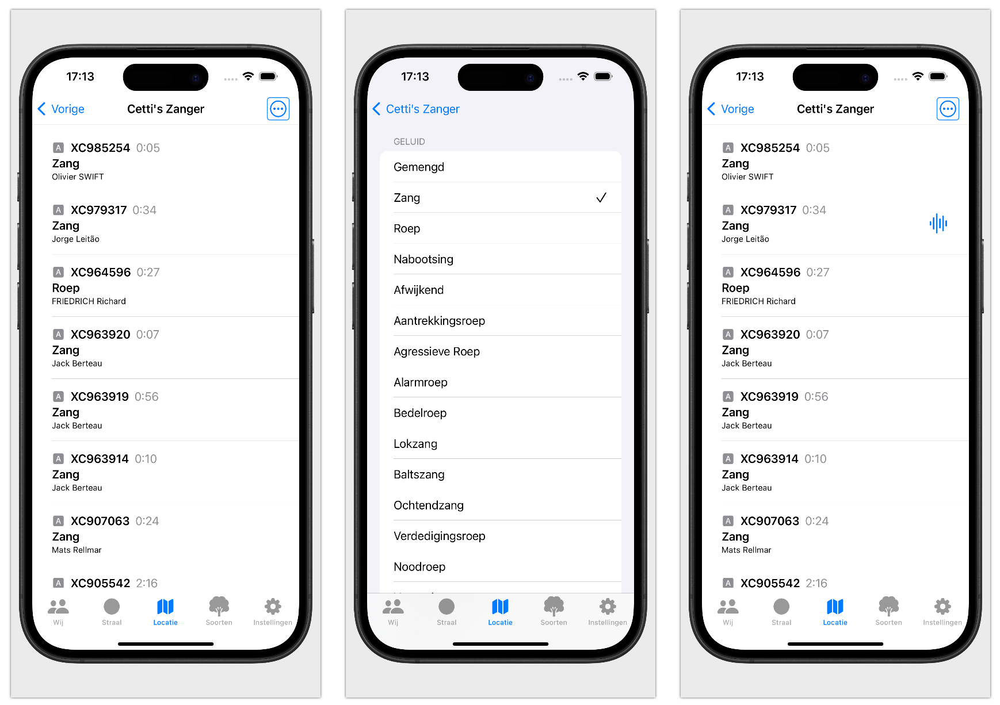
Informatie
Bij soorten, waarnemingen en audio is aanvullende informatie beschikbaar.
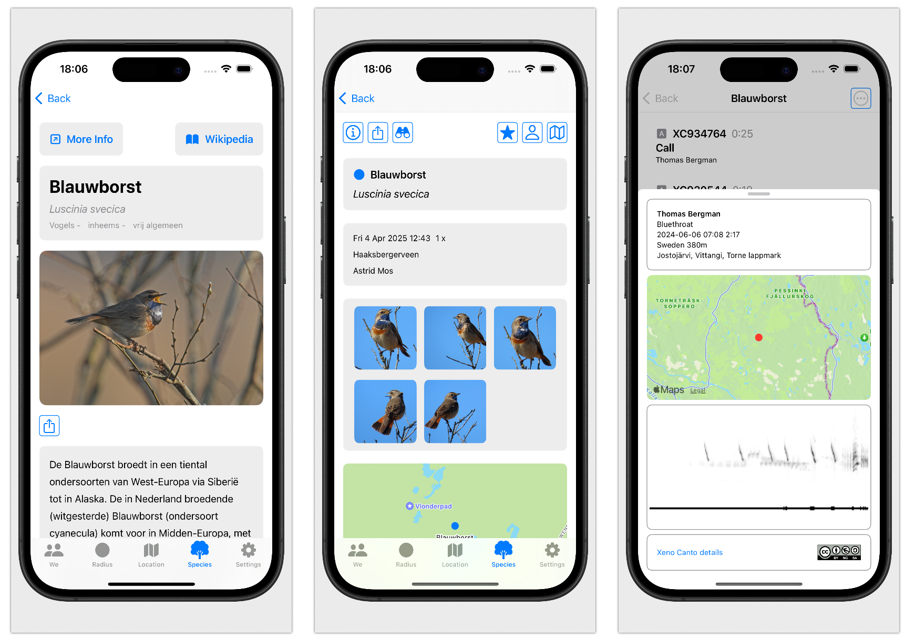
Instellingen
Stel talen in, log in op Waarneming.nl of Observation.org en beheer je QR-code.
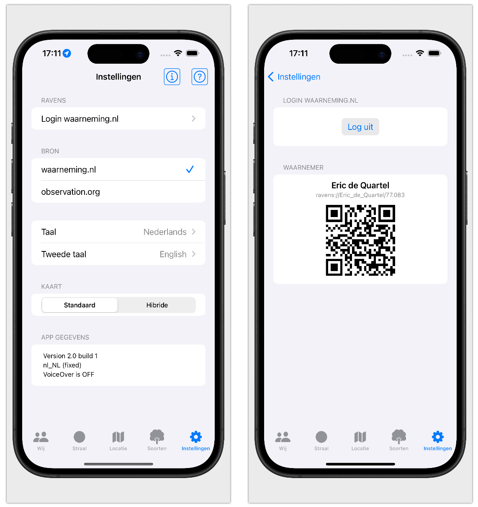